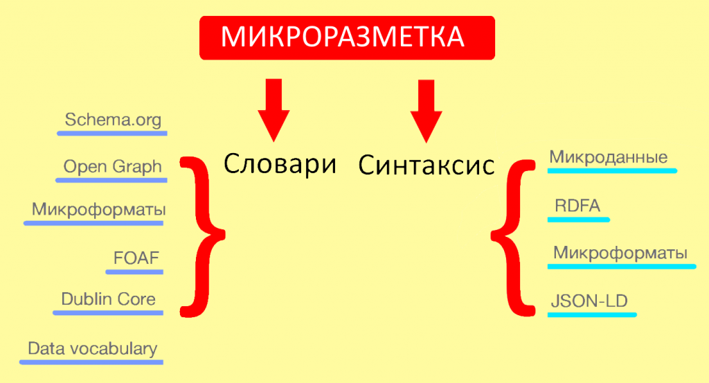

Микроразметка schema.org
25 сентября 2023
Единый стандарт schema.org появился еще в 2011 году по инициативе трех крупнейших поисковых систем — Google, Microsoft, Yahoo. Позже новую схему поддержали и гиганты интернет-поиска, включая отечественный «Яндекс».
В 2021 году семантическую разметку Schema.org используют более 10 миллионов сайтов: как для разметки веб-страниц, так и сообщений электронной почты. Многие известные сервисы, такие как Google, Microsoft, Pinterest, Yandex, используют словари Schema.org для улучшения пользовательского опыта.

Пример семантической разметки schema.org для хедера сайта
Schema.org создавалась для улучшения качества поисковой выдачи. Микроразметка делается тегами, включающими дополнительные атрибуты. Они дают возможность вручную указывать метаданные, подсказывая роботам поисковых систем, что именно находится на выбранной веб-странице.
Если страница имеет корректную семантическую разметку, то в результатах поиска будет отображаться не стандартный сниппет, а расширенный. Он будет включать, например, цену товара, адрес магазина или артикул товара.
Устройство schema.org
По своей структуре schema.org — это словарь семантической разметки. Он включает в себя множество классов, которые используются для того, чтобы указывать контентное содержимое веб-страницы. Словарь включает в себя подробное указание свойств для каждого класса. Синтаксис — второй обязательный элемент микроразметки. Можно сказать, что словарь — подобие языка программирования, а синтаксис — метод его использования.
По своей структуре schema.org — это словарь семантической разметки. Он включает в себя множество классов, которые используются для того, чтобы указывать контентное содержимое веб-страницы. Словарь включает в себя подробное указание свойств для каждого класса. Синтаксис — второй обязательный элемент микроразметки. Можно сказать, что словарь — подобие языка программирования, а синтаксис — метод его использования.
Синтаксис — метод указания свойств и других данных словаря. Указание этих данных происходит непосредственно в коде веб-страницы
Кроме Schema.org существуют и другие словари, например Open Graph, который одно время был самым популярным в Рунете. Продолжались разработки иных словарей: Microdata, RDFa, FOAF, DUBLIN CORE.
К 2021 году образовалась существенная путаница из нескольких словарей, в которых используется разный синтаксис
Для разметки Schema.org могут применяться несколько вариантов синтакиса: от микроданных до JSON-LD, который активно рекомендует Google.

Разные словари / синтаксисы семантической разметки
Главные атрибуты schema.org
Семантическая разметка schema.org базируется на трех главных атрибутах:
Семантическая разметка schema.org базируется на трех главных атрибутах:
| 1 | itemscope | показывает область действия словаря микроданных и определяет область данных. При помощи этого атрибута поисковый робот понимает, что на странице находится описание определенного объекта. Атрибут itemscope всегда используется в связке с атрибутом itemtype. |
| 2 | itemtype | показывает адрес словаря, задействованного для создания разметки. В нашем случае атрибут itemtype будет вести на домен schema.org. |
| 3 | itemprop | позволяет добавить определенное свойство к выбранному элементу. Пара имя-значение. |
Типы данных
Полный список типов доступен на schema.org. Чаще всего размечаются следующие типы данных:
Полный список типов доступен на schema.org. Чаще всего размечаются следующие типы данных:
Статьи (Article).
Хлебные крошки (BreadcrumbList).
Товары (Product).
Отзывы (Review).
FAQ (FAQPage).
Организации (Organization)
Хлебные крошки (BreadcrumbList).
Товары (Product).
Отзывы (Review).
FAQ (FAQPage).
Организации (Organization)
Немного о тегах
Если вы знакомы с HTML, то никаких сложностей с тегами не возникнет. Для начинающих вебмастеров отметим — в коде семантической разметки schema.org используются стандартные HTML-теги:
Если вы знакомы с HTML, то никаких сложностей с тегами не возникнет. Для начинающих вебмастеров отметим — в коде семантической разметки schema.org используются стандартные HTML-теги:
div — «контейнерный» тег для разграничения разделов документа. div позволяет упорядочивать блочные элементы и показывать начало / конец описываемого объекта;
span — строчный контейнер. Пригодится для описания объекта отрывками текста;
link — так называемый пустой элемент (примеры пустых элементов: <area>, <base>, <br>, <col>, <embed>), использующийся для задания канонического URL. Для указания ссылки этот тег используется совместно с href-атрибутом;
time — определяет дату или время. Обратите внимание на формат, который нужно указывать. Дата — только в формате YYYY-MM-DD (например: 2021-07-22). Время — только в формате Тhh:mm (например: Т19:10) или в формате Тhh:mm:ss (например: Т05:10:10);
<a>видимая ссылка</a> — этот тег нужен, чтобы показать URL, которые должны быть видимы на странице;
<meta> — для хранения дополнительной информации.
Нужно ли внедрять микроразметку schema.org на своем сайте?
Поисковые системы рекомендуют внедрять schema.org всем сайтам. Тем не менее ни «Яндекс», ни Google не гарантируют 100% попадания в расширенные результаты поиска для сайтов, использующих семантическую разметку
Сама поисковая система принимает окончательное решение о включении вашего сайта в расширенные результаты поиска. Ваша разметка — лишь рекомендация для Google или «Яндекс», последнее слово всегда остается за ними. Это, пожалуй, единственный недостаток schema.org.
Достоинств больше:
1. Поисковые системы лучше понимают ваш сайт и знают содержание страницы.
2. Ваш сайт может попасть в расширенный сниппет. Более привлекательный сниппет = лучшая кликабельность на поиске.
3. Увеличение CTR положительно влияет на количество конверсий.
4. Размеченные страницы получают лучшие позиции в долгосрочной перспективе.
5. Дополнительные параметры в сниппете улучшают пользовательский опыт.
Может быть интересно:

__.__.____
Будет позже
__.__.____
Будет позже